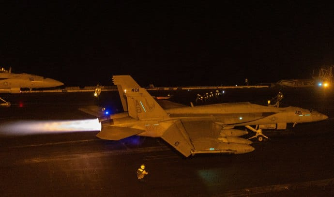

世界苦茶03月16日新闻 | 33条 | G7对华发布强硬声明

G7对华发布强硬声明 | 美众议员提议全面禁止中国学生赴美 | 中国在军事演习中展示登陆驳船 | 美国大规模袭击胡塞武装
苦茶数据
美元兑人民币：7.23（昨日7.23，前日7.24）
美元兑日元：148.64（昨日148.56，前日147.59）
上证指数：休市（昨日3419，前日3420）
标普500指数：休市（昨日5638，前日5521）
比特币：84439（昨日84325，前日81975）
布伦特原油：70.58（昨日70.33，前日70.78）
中国新闻
• G7声明对华立场更强硬，删除“一中”表述 ：七国集团外长周五发表联合声明，在中国议题上采取更加强硬立场，在涉及台湾的内容上也删除了有关“一个中国”政策的表述。学者认为，七国集团的立场说明，它已经把中国当成是威胁了。本周在加拿大魁北克省旅游小镇拉马尔拜，七国集团外长聚首开会，中国依然是焦点。在周五发表的声明中，G7谴责中国对台湾的胁迫。和去年11月的G7外长声明不同，此次声明不再提“对台湾基本立场包括一中政策没有变化“。几十年来一中政策一直是西方与中国和台湾打交道的基石，这次没有提到一中政策，肯定会引起北京的不满。
• 大陆官媒抨击赖清德“谋独”，警告后果 ：台湾总统赖清德就中国大陆对台五大威胁提出的17项因应策略后，多家大陆官媒发声，直指赖清德的策略是“绿恐谋独”，必遭有力惩戒，并警示“台独”意味着战争，若以身试法，将自取灭亡。中共中央机关报《人民日报》星期六发表署名“钟一平”的文章，直指赖清德的17项因应策略是彻头彻尾的“绿恐谋独”，是对“九二共识”的全面否定，是对两岸交流的全面隔绝，再次证明赖清德是“两岸和平破坏者”“台海危机制造者”。文章称，赖清德通过极力渲染“大陆威胁”，试图在台湾制造“绿色恐怖”，以实现打压政治异己、巩固“绿色威权”统治的目的。
• 马英九呼吁赖清德撤回“境外敌对势力”说法 ：台湾前总统马英九在社交平台发文，呼吁现任总统赖清德依照宪法，收回将中国大陆定为“境外敌对势力”的说法。马英九星期五在脸书发文，呼请赖清德遵守“中华民国”宪法，收回“新两国论”与“境外敌对势力”之说，与大陆地区进行和平对话，不要陷台湾与人民于不义与苦难。马英九指出，赖清德星期四在国安高层会议后的宣布，对两岸关系与台海局势将产生重大危机与影响。
• 2255名电诈嫌犯从缅甸押解回中国 ：中国公安部通报，再有2255名中国籍涉电诈嫌犯从缅甸妙瓦底押解回国。中国公安部星期五在官方微信公众号上通报，今年以来，针对当前缅甸妙瓦底地区涉中国电信网络诈骗犯罪严峻形势，中缅泰三国警方不断深化务实执法合作，建机制、断通道、铲窝点，最大限度压缩该地区电信网络诈骗犯罪生存发展空间。随着多架中国民航包机近日分别降落在江苏南京、上海浦东国际机场，再有2255名缅甸妙瓦底地区的中国籍涉诈嫌犯被中国公安机关经泰国押解回国。
• 美政府拟收紧签证，41国面临限制 ：消息人士向媒体透露，美国总统特朗普领导的政府正在考虑收紧美国的签证政策，对全球几十个国家实施分级签证禁限制措施。路透社和纽约时报星期五报道说，美国外交和安全部门起草了一份签证禁限制措施的国家列表，对三个类别的国家实施不同程度的签证限制。不过这两家媒体的报道对国家列表的内容和三个类别国家的区分存在分歧。路透社在星期六所做的更新报道中指出，一共有41个国家进入列表。第一组有10个国家，其中包括阿富汗、伊朗、叙利亚、古巴、朝鲜、索马里、委内瑞拉、不丹、苏丹和也门。这些国家的公民被全面暂停签证，即被禁止入境。
• 中国人大代表提议限制青少年上网时间 ：尽管一些中国年轻人承认自己过多的时间花在网上，但许多人对政府提出的旨在限制青少年的上网和社交媒体使用时间的新措施持怀疑态度。在本周刚刚结束的中国十四届全国人大上，前国际篮球明星姚明呼吁对年轻人的互联网使用进行一定程度的限制。姚明提议，每个学期强制要求儿童关闭所有电子设备一天，即“息屏24小时行动”，到户外去锻炼。此外，政府官员还呼吁加强对网络游戏的监管，并提及有害的网络内容，警告过度使用互联网正在损害18岁以下未成年人的身体健康和学习成绩。
• 美议员提案全面停止中国公民赴美留学 ：多位美国国会众议院共和党人联合提出立法，目的在于全面停止向中国公民签发赴美学生签证。提案议员称，他们担忧中国政府可能利用留学生窃取美国的知识产权并威胁国家安全。来自西弗吉尼亚州的共和党联邦众议员莱利·摩尔星期五提出《通过维护学术界知识产权保障阻止中共窥探法》，法案英文缩写译为《阻止中共签证法》。仅有两页内容的法案旨为禁止向中华人民共和国国籍的外国人发放出于研究或学习目的的学生签证提供其他非移民身份，这些签证包括F、J或M类。
• 尼日尔军政府驱逐三名中国石油高管 ：西非国家尼日尔的媒体报道，该国军政府将当地石油企业任职的三名中国高管驱逐出境。官方文件显示，一家中资酒店也被令关闭。法新社星期五引述多家尼日尔媒体报道，当局限定在中国石油天然气集团有限公司、西非原油管道股份有限公司和SORAZ任职的三名中国高管，在两天内离开尼日尔。中石油在尼日尔开采石油，西非原油管道是中石油旗下分支，负责原油管道运营，SORAZ则是原油提炼公司。
• 中国“入侵驳船”首次出现在演习中。中国“诺曼底登陆式”驳船被发现在南海进行两栖登陆演习： 镜头显示中国海军正在演习大型特殊登陆驳船，国防分析人士警告称，如果全面入侵台湾，这些驳船可能发挥关键作用。水桥驳船的设计灵感似乎来源于 1944 年为诺曼底登陆而建造的桑葚港，其船头延伸出长达 120 米的长公路桥。这些桥梁充当浮动、可伸缩的码头，可用于快速将坦克、战车、重型装备或部队从船上卸载到敌岸。它们还可以让北京的军队绕过海滩防御或到达以前被认为不适合两栖登陆的海滩。
亚太印太新闻
• 缅甸反对派武装曼德勒人民防卫军3月15日称，缅甸政府军14日下午对曼德勒以北约65公里的辛古镇一村庄的市场区域发动空袭，造成至少27名平民死亡、30人受伤。政府军未发表评论。
• 日本温泉因游客激增面临水资源短缺 ：日本共同社报道，由于外国游客涌入导致用水量增加，日本各地一些温泉度假村正面临水资源短缺的问题，一些温泉因供水不足被迫关闭。日本地方官员指出，尽管一些地方政府限制了新的钻探并呼吁节约用水，但旅游热潮不减退，长期解决方案仍未出现。九州西南部佐贺县的嬉野市市长村上大辅在1月底的紧急新闻发布会上说：“水位在下降，但温泉仍在运营。”
• 日本外国居民激增，去年增长35.8万人 ：日本星期五发布的数据显示，日本去年的外国居民人数增长速度是政府预期的两倍，达到377万人，连续第三年创历史新高，其中更多人才来自南亚和东南亚。截至2023年底，外国居民人数增加约35万8000人，增长10.5%，过去三年的总增幅约为100万人。根据日本2023年发布的人口预测假设，日本每年入境移民人数约为16万5000人，预计到2067年，非日本人口将超过总人口的10%。 （翻评：日本去年新生儿72万，这已经基本到达新生儿的一半了。）
• 傅崐萁被搜引争议，国民党警告赖清德 ：台湾在野的国民党立法院党团总召傅崐萁传出在花莲的住家被搜后，国民党立院党团警告台湾总统赖清德，若企图利用司法恫吓在野党，将沦为破坏民主法治的历史罪人。有消息称，台北地检署星期五早上指挥调查局搜索傅崐萁和花莲县长徐榛蔚位于花莲的住家。傅崐萁当天发声明，指责没有管辖权的台北地检署，领衔对已由各地检署侦结的竞选小物案到花莲搜索；但北检否认搜索傅崐萁的住处。该案起源于今年2月，傅崐萁被指控曾通过花莲的“战天下”公司，向蓝营40名立委候选人提供帽子等竞选小物，以换取他们支持傅崐萁竞选立法院长，且经费来源可能来自中国大陆，涉嫌违反商业会计法、反渗透法等。
• 韩国宪法法院即将裁定是否罢免尹锡悦 ：韩国宪法法院预计未来几天将裁定是否罢免总统尹锡悦，支持和反对他的韩国民众星期六继续在首尔大规模集会。尹锡悦去年12月3日晚突然宣布全国戒严令，指责反对派颠覆国家，数小时后又取消，引发韩国数十年来最严重的政治危机。星期六在首尔市中心，反对尹锡悦的抗议者聚集在一个大型广场，高喊要求他立即下台，并得到反对派政客的支持。
• 印尼计划6月恢复对沙特输出劳工 ：印度尼西亚计划解除长达10年的禁令，最快在6月恢复向沙特阿拉伯输出家庭帮佣和正规员工。随着沙特保证加强劳工保护，两国计划签署一项协议，沙特还承诺提供多达60万工作岗位。印尼移工保护部长卡迪尔星期六向媒体透露，两国部长将于本月晚些时候在吉达签署谅解备忘录。
• 台湾海委会称黑名单权宜轮暂无高度威胁 ：台湾海洋委员会主任委员管碧玲在社交平台发文，称目前列入黑名单的96艘权宜轮暂无高度威胁。管碧玲星期五在脸书写道，历经数月，海委会星期四在中央灾害防救会报上指出，在各相关部会通力合作下，台湾周边海域高威胁权宜轮活动明显减少，显示管理措施已达初步成效。她介绍，为监管权宜轮，台海委会的国家海洋研究院对周边海域权宜轮滞留、异常航行情况，进行大数据分析；尤其在断缆事件不断发生后，国海院更聚焦对列入黑名单的96艘权宜轮进行活动分析，将其分成高度威胁、中度威胁、低度威胁、无威胁等四级监控。
• 国民党全国百场活动反制民进党大罢免 ：台湾在野的国民党将从下星期四起，在全台举办百场反制大罢免说明会。综合台湾《中国时报》《太报》报道，国民党星期五宣布，从3月20日起至5月20日总统就职日，将从新北市出发，在全台75个区域立委选区，举办上百场“还钱于民”问政说明会，以反制民进党的大罢免攻势。国民党立院党团首席副书记长罗智强表示，民进党要展开全台拼斗争、大罢免，用纳税人的钱宣扬斗争信念，国民党只能用草根草鞋、最庶民的方式走进群众，用政策跟人民站在一起。
• 杜特尔特视频出庭，律师称审判是政治报复 ：菲律宾前总统杜特尔特3月14日通过视频连线参加国际刑事法院第一预审庭举行的首次聆讯。杜特尔特身着西装，打着领带。他不时闭上眼睛听法官发言，看起来十分疲倦。法庭对杜特尔特的身份进行确认。在回答法官提问时，杜特尔特音量不高。整个过程中，他的态度平静淡定。杜特尔特的律师萨尔瓦多·梅迪亚尔德亚在法庭上表示，杜特尔特患有“严重衰弱性健康问题”，听力和视力衰退，“除了表明身份，我的当事人无法在这次听证会上提供任何信息”。他强调此次审判是出于政治报复。第一预审庭主审法官尤利娅·莫措克称，法庭医生认为杜特尔特的身体状况可以进行接下来的司法程序，定于9月23日进行审理程序的下一阶段，即举行“确认指控”听证会。
科技新闻
• SpaceX“龙”飞船发射，运送宇航员返航 ：美国太空探索技术公司的“龙”飞船从美国佛罗里达州发射升空，搭载四名来自美国、日本和俄罗斯的新一期宇航员飞往国际空间站，将接回包括因波音“星际客机”飞船技术故障滞留太空的两名美国宇航员在内的四名宇航员。美国航空航天局直播画面显示，“龙”飞船于美国东部时间星期五晚上7时零3分搭乘“猎鹰9”火箭从佛罗里达州肯尼迪航天中心发射升空。随后，飞船与火箭分离，继续飞向国际空间站。火箭第一级顺利在位于发射台附近的卡纳维拉尔角太空军基地回收场着陆。按计划，飞船将在飞行约28.5小时后，于美国东部时间15日晚上11时30分左右与国际空间站对接。
• 美副总统称TikTok协议将在4月前敲定 ：美国副总统万斯说，他预计总统特朗普将在4月5日的最后期限前为TikTok达成一项协议，让这款视频分享应用在美国继续运营。万斯星期五接受美国全国广播公司访问时说：“几乎肯定会有一项高级别协议，我认为会满足我们的国家安全关切，允许有一个不同的美国TikTok企业。”万斯正在协助强制TikTok出售美国业务的谈判，但他没有提供任何关于收购TikTok的谈判参与者的细节。
财经新闻
• 英国1月经济意外萎缩，工党政府受压 ：英国经济在1月份出人意料萎缩，给去年夏天上台的工党政府带来新的压力。英国国家统计局星期五发布，1月份国内生产总值环比萎缩了0.1%，制造业和建筑业下滑是主要原因。经济师此前预计1月份经济会环比增长0.1%。这意味着自工党在7月以压倒性赢得大选以来，英国经济产出几乎没有增长。
• 法财长警告美欧贸易战恐升级 ：针对美国总统特朗普威胁对欧盟酒类产品征收200%关税的言论，法国经济与财政部长隆巴尔说，美欧间的贸易争端“将进入升级阶段”。新华社报道，隆巴尔星期五在法国电视2台表示，特朗普此举“并不令人意外”。“特朗普是一位谈判者，他的谈判方式首先就是提高关税。”隆巴尔还说：“这是一场愚蠢的战争，但如果我们想与他谈判，就必须势均力敌，我们也将提高关税。欧盟有权这么做。之后我们应该与美方进行谈判以缓和局势、降低关税。”
• 美玩具商加速撤离中国，40%产能外移 ：面对关税威胁，美国玩具制造商MGA娱乐公司加速重塑生产线，包括计划在半年内将四成产能移出中国。据路透社星期四报道，MGA娱乐公司首席执行官拉里安受访时说，印度、越南和印度尼西亚现有产能介于10%至15%。公司预计在半年内将中国40%产能移到这些地方。届时，公司仍保留约60%在华产能。拉里安称，公司或将需要提高中国制造产品的批发价，以保障公司已微薄的利润率。“这将伤害到消费者，因为我们必须把额外成本转嫁给零售商”。
• 宁德时代净利润增15%，但营收10年来首降 ：全球最大电动汽车电池制造商宁德时代去年净利润同比增加超15%，年营收10年来首次出现下滑。综合财联社和每日经济新闻网等报道，中国上市企业宁德时代星期五发布的2024年财报显示，公司营业收入为3620.13亿元人民币，同比下降9.70%，比分析师预估的3720亿元低；公司净利润为507.45亿元，同比增长15.01%，低于分析师预期的515亿元。对于营收下滑净利增长，宁德时代在2024业绩预告中说：“尽管公司电池产品销量有所增长，但由于碳酸锂等原材料价格下降，公司产品价格相应调整，导致营业收入同比下降；净利润实现同比上升，主要得益于公司研发技术和产品力。”
俄乌战争
• 英首相斯塔默促加大对俄施压，敦促停火 ：英国首相斯塔默呼吁西方国家加大对俄罗斯总统普京的施压，称普京“迟早”必须认真讨论乌克兰停火问题。他也说，任何乌克兰和平计划，都需要获得美国的合作。综合彭博社和路透社报道，斯塔默星期六主持一个线上会议，召集了约25位欧盟领导人与其他盟友，就给予乌克兰支持进行讨论。斯塔默说：“如果普京真的想实现和平，那很简单，他必须停止对乌克兰的野蛮攻击，并同意停火。全世界都在看。而我的感觉是，普京迟早会坐到谈判桌前，进行认真的讨论。”
• 俄乌互射无人机，北约及欧盟重申援乌 ：俄罗斯和乌克兰3月15日互相发射大量无人机。乌克兰空军称，俄罗斯发射了178架无人机和2枚弹道导弹。约130架被击落，38架未抵达目标。俄罗斯国防部称，在俄罗斯6个州拦截了126架乌克兰无人机。乌克兰武装部队总参谋部称，乌军已离开俄罗斯库尔斯克州苏贾市并向乌边境方向移动。总统泽连斯基援引武装部队总司令瑟尔斯基的战况说，在库尔斯克的乌军没有被包围，乌军正按“需要”在当地执行任务。泽连斯基还表示，乌方注意到俄军在沿着乌东部边境集结兵力，这表明俄方有意对乌克兰苏梅州发动攻击，“明显是在延长战争”。英国、法国、乌克兰、加拿大以及欧盟委员会、北约等20多个国家和地区组织领导人15日召开视频会议。英国首相斯塔默会后强调，如果乌克兰与俄罗斯未达成和平协议，各方同意继续向乌克兰提供军事支持，并将继续向俄罗斯施压。
其他新闻
• 哈马斯称释放人质前以军须停火 ：哈马斯3月15日称，释放一名人质和4名人质遗体的前提是以色列执行停火协议。以色利还需要允许人道主义援助进入加沙并从“费城走廊”撤军。以色列当天对加沙北部城镇拜特拉希亚发动2次空袭，造成至少9人死亡，其中包括3名记录援助物资分发的巴勒斯坦记者。事发时，其中一人正操作无人机。以色列军方称，无人机对当地士兵构成威胁，因此袭击了2名操作无人机的人，并对另一群前来领取无人机设备的人进行袭击。哈马斯称此次袭击是“严重升级”，表明以色列试图破坏停火协议。
• 以军袭击加沙北部，5名巴勒斯坦人丧生 ：以色列星期六袭击加沙北部城镇拜特拉希耶，造成至少五名巴勒斯坦人丧命，包括两名当地记者。当地医护人员告诉路透社，另有几人受重伤，袭击击中一辆汽车，车内外都有人伤亡。目击者和其他在场记者表示，车上的人正在为一个名为”Al-Khair基金会”的慈善机构执行任务，他们在袭击发生时由记者和摄影师陪同。
• 美军大规模袭击胡塞武装，特朗普强硬警告 ：美军对也门胡塞武装领导人、军事基地以及防空系统等目标发动大规模攻击，造成至少19人死亡。美国总统特朗普警告称，如果胡塞武装不停止袭击，将遭受地狱般的打击。综合外电报道，特朗普星期六下令对胡塞武装实施大规模军事打击，同时要求伊朗停止支持这个组织。他表明，如果伊朗威胁美国，“美国会追究你的全部责任，而且我们不会手软”。这是特朗普1月就任总统以来，美国在中东地区开展的最大规模军事行动。一名美国官员说，美军这次的行动预计持续数天甚至数周，星期六的打击行动部分由停泊在红海的“哈里·杜鲁门”号航空母舰上的战斗机执行。 （翻评：这是敲打伊朗。）
• 马克龙否认恢复义务兵役，强调社会动员 ：法国总统马克龙表明，他不会恢复义务兵役制，但希望动员全社会，应对俄罗斯的侵略。他预计在未来几周内宣布这个决定。法新社报道，包括法国在内的欧洲国家一直在讨论恢复义务兵役制，以期增强国防实力，抵御俄罗斯侵略。美国总统特朗普喊话欧洲自己承担安全责任，则进一步加剧针对北约实力的担忧。法国于2001年废除义务兵役制，全面实行志愿兵役制。马克龙星期五接受地区媒体采访时说，恢复义务兵役制不是一个现实的选择，法国已不具备重新实行义务兵役制的后勤条件。
• 美交部长称，波音737 MAX失信，监管加强 ：美国交通部长达菲说，美国飞机制造商波音公司生产的737 MAX机型近年来发生多起事故，失去了美国民众的信任，需严加监管。新华社报道，达菲星期五在西雅图召开媒体发布会时指出，美国联邦航空管理局目前尚未准备解除对波音施加的每月生产38架737 MAX飞机的限制。达菲此次前往华盛顿州，与波音首席执行官奥特伯格以及美国联邦航空管理局代理局长罗谢洛讨论了去年美国阿拉斯加航空公司一架737 MAX型客机飞行途中机身门塞脱落事件。
• 匈牙利总理誓言打击受外资资助的政客 ：匈牙利总理欧尔班星期六誓言对付那些接受外国资助的政客和记者，并再次排除乌克兰加入欧盟的可能性。欧尔班当天在首都布达佩斯举行的国庆日集会上表示，现在是时候铲除由美国和布鲁塞尔支付报酬的非政府组织、记者、法官和政客组成的“影子大军”，他指的是那些接受美国国际开发署和亿万富翁索罗斯资助的非政府组织和媒体。欧尔班说：“今天的庆祝活动结束后，就是复活节大扫除……我们将消灭整支影子大军，他们为了钱支持帝国，反对自己的国家”。
• 特朗普3月15日援引1798年的《外敌法案》，宣布委内瑞拉帮派组织“阿拉瓜火车”为侵略部队，将驱逐多达300名被认为是帮派成员的移民，被联邦法官叫停： 特朗普政府同意向萨尔瓦多支付600万美元，将上述移民监禁一年。美国公民自由联盟和民主前进组织当天在哥伦比亚特区联邦地区法院提起诉讼，称有5名委内瑞拉男子因此面临“迫在眉睫的驱逐风险”。法官博斯伯格紧急下令，暂停政府的驱逐行为14天。博斯伯格说，政府已经在运送移民，因此需要立即发布命令。他表示，短暂推迟驱逐不会对政府造成伤害。博斯伯格还将安排听证会，讨论是否将其命令扩大到可能成为驱逐目标的所有人。特朗普政府随后对博斯伯格的命令提出上诉，认为这将削弱行政部门权力。《外敌法案》赋予总统在战时监禁和驱逐非公民的权力。目前仅在美国第二次独立战争和两次世界大战期间使用过。